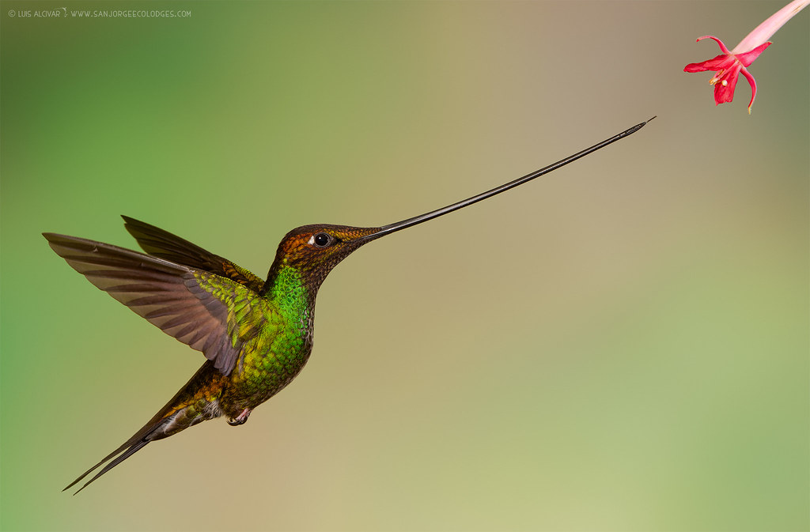
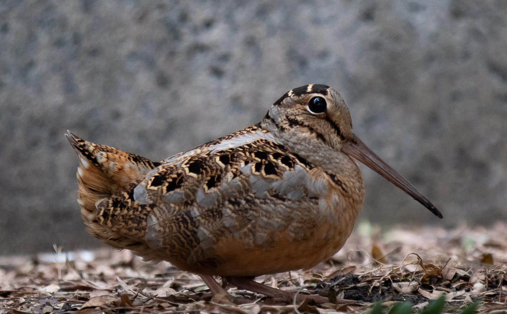
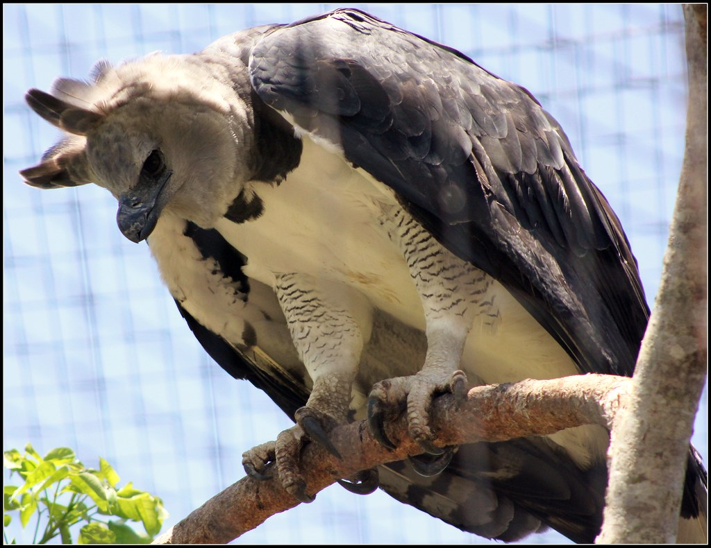

Beak
The Sword-billed Hummingbird is the only bird with a beak longer than its body.
Speed
The American Woodcock has the slowest ever recorded flight speed (5mph).
Talons
Harpy eagles have the longest talons(4in) of all living species of birds.
